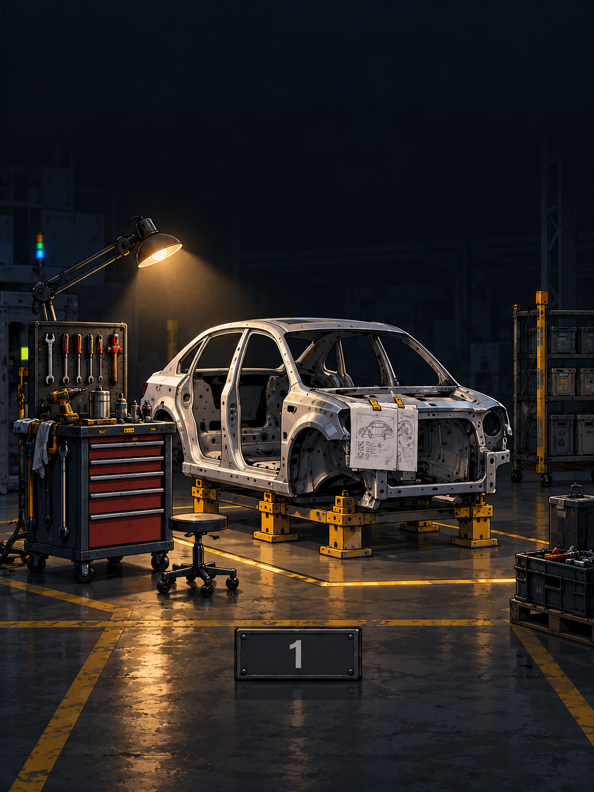
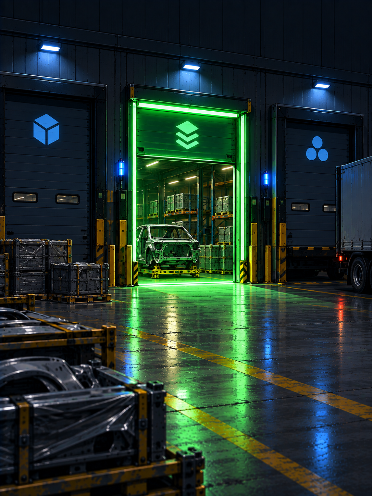
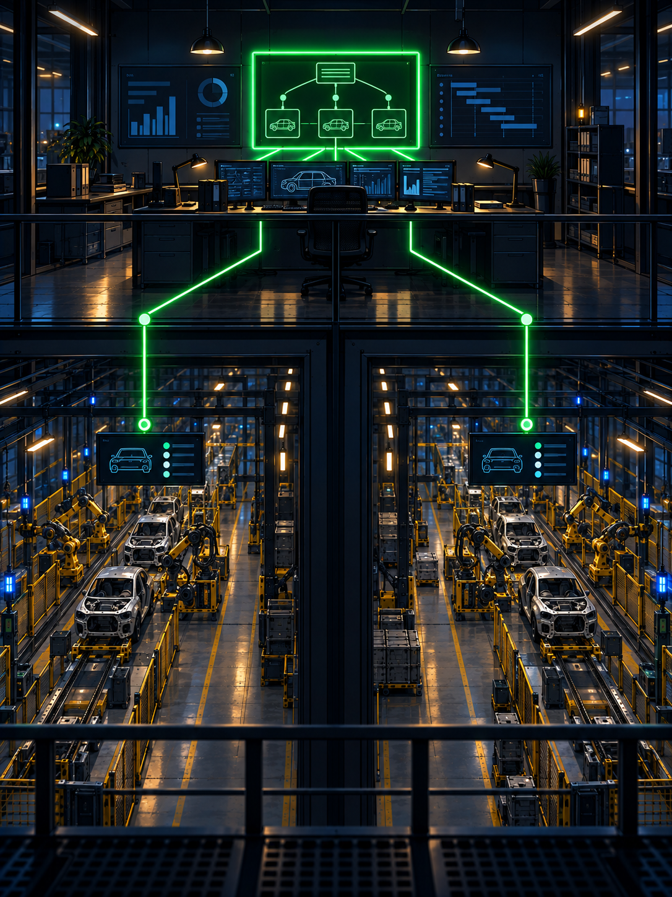
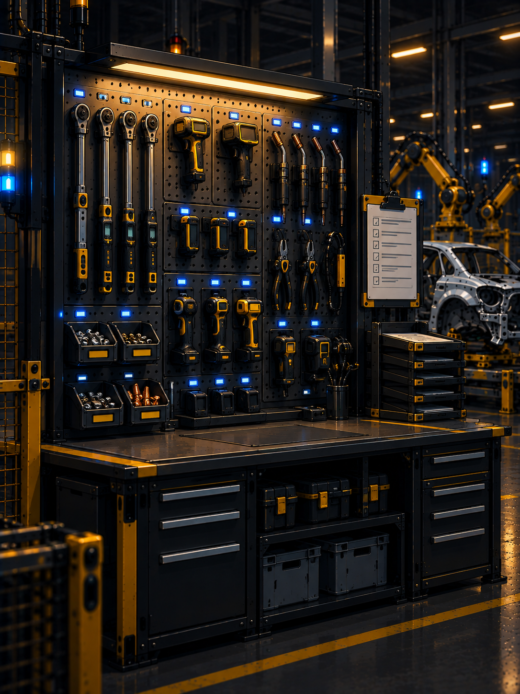

prompt ──▶ plan in chat ──▶ code in base ──▶ eyeball ──▶ push?
idea ──▶ brainstorm ──▶ write plan ──▶ worktree ──▶ execute+TDD ──▶ verify→review→fix ──▶ finishbrainstorm ──▶ spec-review ──▶ plan ──▶ plan-review ──▶ implement+review ×N ──▶ deliverkind: cli runs, kind: agent briefs, gate stopssuper-fr#449 — Why, spec/plan/journal links, What shipsAcceptance rows, verification log, journaled deviations, open findings
What superpowers lacked, the failure that paid, what it costs
fr isolation up --branch feat/thing --profile dev
fr isolation exec --branch feat/thing -- uv run pytest -q
fr isolation status
fr isolation down --branch feat/thingkind: cli executes, kind: agent briefs, gate stopsfr workflow check rejects bad graphs before tokens burnworkflow: fr-goal
schema: 1
unit: run
requires: [git, tests, scm]
steps:
- id: brainstorm
kind: agent
skill: super-fr:fr-brainstorming
gate: operator
emits: [spec, journal:spec]plugins/super-fr/workflows/fr-goal.yamlimplement is a grouped for_each, review enforced per phaserun: 2026-09-09-feat-presentation-showdown
workflow: presentation-showdown@1
cursor: record-compare
steps:
outline: {state: done}
experiment-design: {state: done}
design-review: {state: done, exit: 0}
instrument: {state: done}
record-compare: {state: pending}fr run resolve 2026-09-09-feat-presentation-showdown \
--step outline --state done \
--emitted spec=docs/superpowers/specs/2026-09-09-design.md# status: ci | scheduled | skipped | not-implemented | failing
rows:
- id: session-workspace-binding
capability: Isolation
acceptance: bound workspace shown in status line
origin: [super-fr:docs/superpowers/specs/2026-09-04-design.md]
status: cidocs/acceptance/matrix.yaml, rows appended by CLI onlysuperpowers: design doc + commit, reviewer loop x3, user reads file
super-fr adds: Test Plan section (post-merge, operator-driven),
Implementation Plans table (one row per repo),
acceptance rows born here with one-line defenses_meta.yaml, _prose.md, one file per phaseP1.T1.S1, dependencies explicitfr plan self-review: cycles, hidden manual work, bad links[manual], never smuggled inschema_version: 2
phase:
number: 2
title: Experiment protocol and instrumentation
tag: agentic
depends_on: [1]
tasks:
- number: 1
title: Freeze protocol and capture harness
steps:
- {id: P2.T1.S1, text: Write seed prompt template}superpowers: # Feature Implementation Plan, checkbox steps,
2-5 minute granularity, reviewer loop, then handoff choice
super-fr: folder (_meta.yaml, _prose.md, NN.yaml per phase),
P1.T1.S1 ids, tier + acceptance per phase, self-review gate<!-- fr:journal kind=decision scope=spec id=293fbe90d058 -->
### 293fbe90d058 — decision — Outline gate answered
Model: OpenAI Terra default effort both runs.
Demo: details redacted (not accessed; not cleared).Six rows born with the spec, all now ci:
session-workspace-binding, statusline-shows-bound-workspace, ...
fr acceptance check: 99 rows OK.
pytest: 2685 passed, 84 skipped. ruff clean.derio-net/super-fr#449, the annotated exampleDeviations from the plan text (all journaled):
- down runs detach_all after teardown, not before (7656ab55c62c)
- Acceptance levels are unit|api|int|ui (62c39ba6fb84)
Open findings (follow-ups, not blockers):
- d028f3cc945a Hermes has no session bind transport yet.gh, glab, tea behind one backend switchorigin/HEADfr run surface
fr apply docs/superpowers/plans/2026-09-09-x # dry-run preview
fr apply docs/superpowers/plans/2026-09-09-x --to vk --yesfr:ready to fr:pr-ready, manual never routedowner/repo:path)
| Plan | Repo | File | Depends on |
|---|---|---|---|
| 2026-09-09-presentation-showdown | `derio-net/super-fr` | `2026-09-09-presentation-showdown` | — |owner/repo:path, one plan per repoimplemented/docs/superpowers/implemented/
audits/ journals/ plans/ specs/
plans/2026-04-12-vk-cli-p2-dispatch ...From zero to first reviewed pull request
curl -fsSL .../bootstrap.sh | bash # install fr plus plugins
fr-init # interview, scaffold a profile
/fr-goal <what you want> # answer once, then watch
fr acceptance status # flip rows as evidence landsfr-brainstorming, fr-debugging, fr-planworkflows/<name>.yaml, validated by checkfr apply --to <runner> fans merged phases to agents
Next: the test track — one annotated fr-goal run, narrated live